# Load packages
library(tidyverse)
library(janitor)
library(rstan)
library(bayesplot)1 Approximating the Posterior
1.1 Grid Approximation
1.1.1 Beta-Binomial Example
\[ \begin{equation} \begin{split} Y|\pi & \sim \text{Bin}(10, \pi) \\ \pi & \sim \text{Beta}(2, 2) . \\ \end{split} \end{equation} \]
We can interpret \(Y\) here as the number of successes in 10 independent trials. Each trial has probability of success π where our prior understanding about \(\pi\) is captured by a \(Beta(2, 2)\) model. Suppose we observe \(Y = 9\) successes.
# Step 1: Define a grid of 6 pi values
grid_data <- data.frame(pi_grid = seq(from = 0, to = 1, length = 6))
# Step 2: Evaluate the prior & likelihood at each pi
grid_data <- grid_data %>%
mutate(
prior = dbeta(pi_grid, 2, 2),
likelihood = dbinom(9, 10, pi_grid),
unnormalized = prior * likelihood,
# Step 3: Approximate the posterior
posterior = unnormalized / sum(unnormalized)
)
round(grid_data, 2) pi_grid prior likelihood unnormalized posterior
1 0.0 0.00 0.00 0.00 0.00
2 0.2 0.96 0.00 0.00 0.00
3 0.4 1.44 0.00 0.00 0.01
4 0.6 1.44 0.04 0.06 0.18
5 0.8 0.96 0.27 0.26 0.81
6 1.0 0.00 0.00 0.00 0.00# Plot the grid approximated posterior
ggplot(grid_data, aes(x = pi_grid, y = posterior)) +
geom_point() +
geom_segment(aes(x = pi_grid, xend = pi_grid, y = 0, yend = posterior))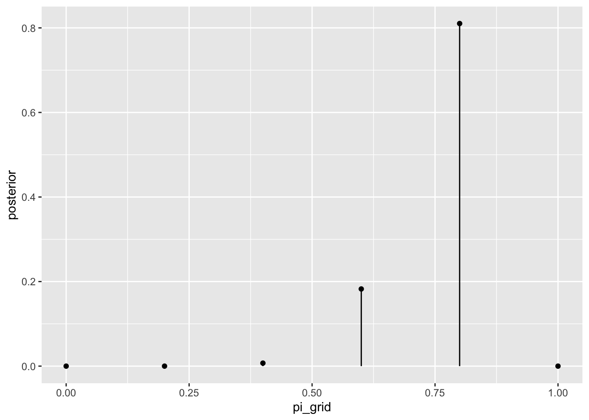
# now sampling from posterior
set.seed(84735)
# Step 4: sample from the discretized posterior
post_sample <- sample_n(grid_data, size = 10000, weight = posterior, replace = TRUE)post_sample %>%
tabyl(pi_grid) %>%
adorn_totals("row") pi_grid n percent
0.4 69 0.0069
0.6 1885 0.1885
0.8 8046 0.8046
Total 10000 1.0000# Histogram of the grid simulation with posterior pdf
ggplot(post_sample, aes(x = pi_grid)) +
geom_histogram(aes(y = after_stat(density)), color = "white") +
stat_function(fun = dbeta, args = list(11, 3)) +
lims(x = c(0, 1))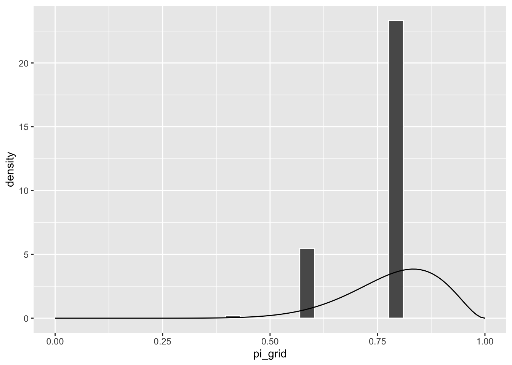
We can get better simulations by using a fine grid,
tibble(
# Step 1: Define a grid of 101 pi values
pi_grid = seq(from = 0, to = 1, length = 101),
# Step 2: Evaluate the prior & likelihood at each pi
prior = dbeta(pi_grid, 2, 2),
likelihood = dbinom(x = 9, size = 10, prob = pi_grid),
# Step 3: Approximate the posterior
unnormalized = prior * likelihood,
posterior = unnormalized / sum(unnormalized)
) -> grid_data
# Plot the grid approximated posterior
grid_data %>%
ggplot(aes(x = pi_grid, y = posterior)) +
geom_point() +
geom_segment(aes(x = pi_grid, xend = pi_grid, y = 0, yend = posterior))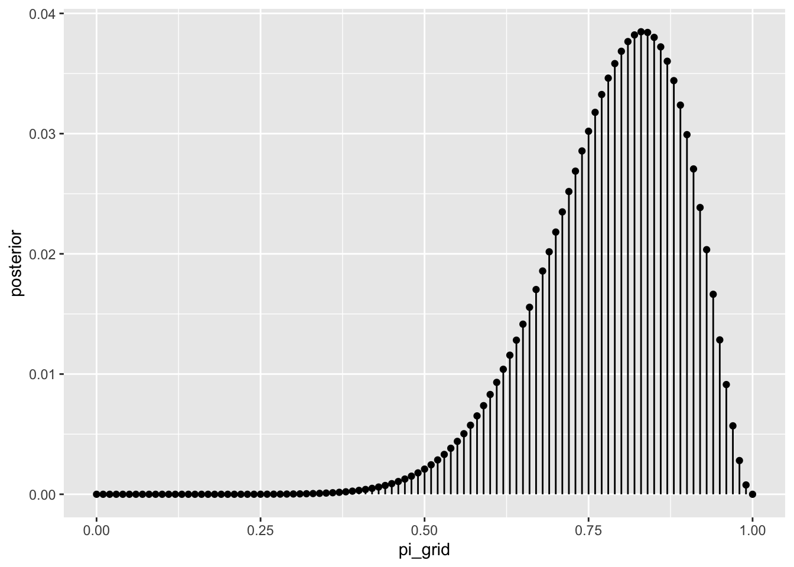
set.seed(84735)
# Step 4: sample from the discretized posterior
sample_n(grid_data, size = 10000, replace = TRUE, weight = posterior) %>%
ggplot(aes(x = pi_grid)) +
geom_histogram(aes(y = after_stat(density)), color = "white", binwidth = 0.05) +
stat_function(fun = dbeta, args = list(11, 3)) +
lims(x = c(0, 1))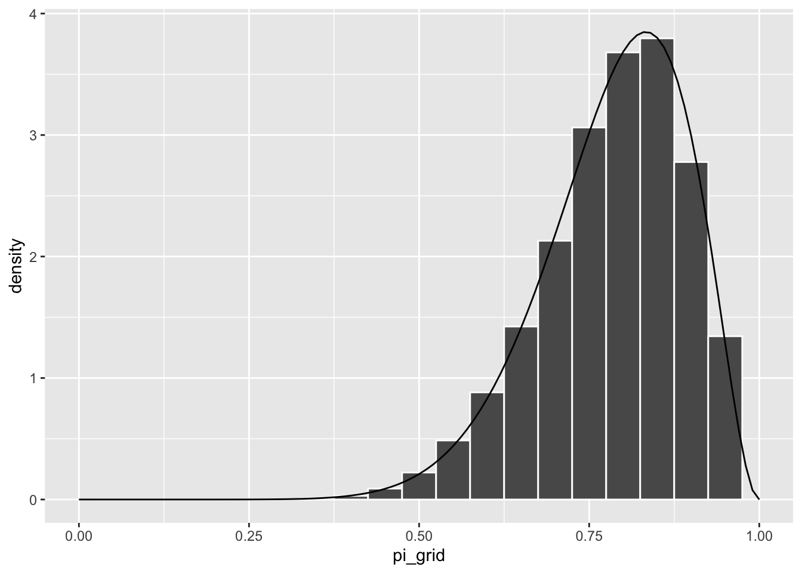
1.1.2 Gamma Poisson Example
Let \(Y\) be the number of events that occur in a one-hour period, where events occur at an average rate of \(\lambda\) per hour. Further, suppose we collect two data points \((Y_1, Y_2)\) and place a \(Gamma(3, 1)\) prior on \(\lambda\):
\[ \begin{equation} \begin{split} Y_i|\lambda & \stackrel{ind}{\sim} \text{Pois}(\lambda) \\ \lambda & \sim \text{Gamma}(3, 1) . \\ \end{split} \end{equation} \]
# Step 1: Define a grid of 501 lambda values
grid_data <- data.frame(lambda_grid = seq(from = 0, to = 15, length = 501))
# Step 2: Evaluate the prior & likelihood at each lambda
grid_data <- grid_data %>%
mutate(prior = dgamma(lambda_grid, 3, 1),
likelihood = dpois(2, lambda_grid) * dpois(8, lambda_grid))
# Step 3: Approximate the posterior
grid_data <- grid_data %>%
mutate(unnormalized = likelihood * prior,
posterior = unnormalized / sum(unnormalized))
# Set the seed
set.seed(84735)
# Step 4: sample from the discretized posterior
post_sample <- sample_n(grid_data, size = 10000,
weight = posterior, replace = TRUE)
post_sample %>%
ggplot(aes(x = lambda_grid)) +
geom_histogram(aes(y = after_stat(density)), color = "white", binwidth = 0.8) +
stat_function(fun = dgamma, args = list(13, 3)) +
lims(x = c(0, 15))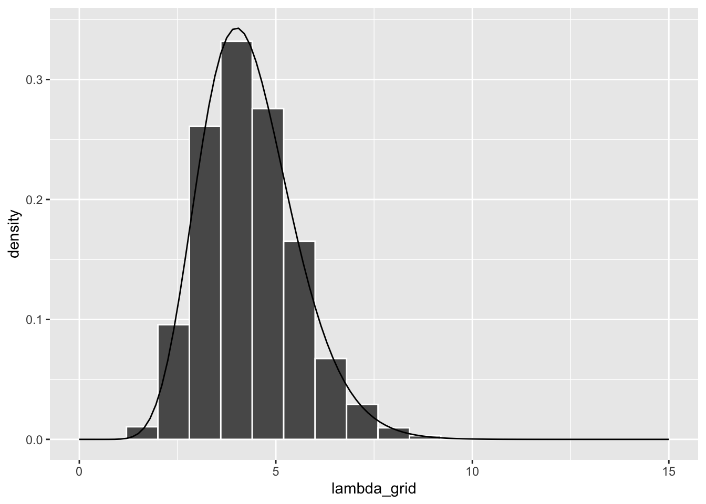
1.1.3 Limitations of Grid Approximation
For models with lots of parameters, grid approximation suffers from curse dimensionality.
1.2 Markov chains via rstan
MCMC samples are not taken directly from the posterior pdf \(f(\theta|y)\)
MCMC samples are not even independent (since generated from a markov chain)
Markov Chain Monte Carlo
MCMC simulation produce a sample of N dependent \(\theta\) values \(\left(\theta^{(1)}, \theta^{(2)}, \dots , \theta^{(N)}\right)\) which are not drawn from posterior pdf.
1.2.1 Beta Binomial Example
# STEP 1: DEFINE the model
bb_model <- "
data {
int<lower = 0, upper = 10> Y;
}
parameters {
real<lower = 0, upper = 1> pi;
}
model {
Y ~ binomial(10, pi);
pi ~ beta(2, 2);
}
"# STEP 2: SIMULATE the posterior
bb_sim <- stan(model_code = bb_model, data = list(Y = 9),
chains = 4, iter = 5000*2, seed = 84735)Running /Library/Frameworks/R.framework/Resources/bin/R CMD SHLIB foo.c
using C compiler: ‘Apple clang version 15.0.0 (clang-1500.1.0.2.5)’
using SDK: ‘MacOSX14.2.sdk’
clang -arch x86_64 -I"/Library/Frameworks/R.framework/Resources/include" -DNDEBUG -I"/Users/ovee/Library/Caches/org.R-project.R/R/renv/cache/v5/R-4.3/x86_64-apple-darwin20/Rcpp/1.0.12/5ea2700d21e038ace58269ecdbeb9ec0/Rcpp/include/" -I"/Users/ovee/Documents/Bayesian/bae-note/renv/library/R-4.3/x86_64-apple-darwin20/RcppEigen/include/" -I"/Users/ovee/Documents/Bayesian/bae-note/renv/library/R-4.3/x86_64-apple-darwin20/RcppEigen/include/unsupported" -I"/Users/ovee/Documents/Bayesian/bae-note/renv/library/R-4.3/x86_64-apple-darwin20/BH/include" -I"/Users/ovee/Library/Caches/org.R-project.R/R/renv/cache/v5/R-4.3/x86_64-apple-darwin20/StanHeaders/2.32.7/3e1bf18c6ab1dc0a4a139bf566f78bbe/StanHeaders/include/src/" -I"/Users/ovee/Library/Caches/org.R-project.R/R/renv/cache/v5/R-4.3/x86_64-apple-darwin20/StanHeaders/2.32.7/3e1bf18c6ab1dc0a4a139bf566f78bbe/StanHeaders/include/" -I"/Users/ovee/Library/Caches/org.R-project.R/R/renv/cache/v5/R-4.3/x86_64-apple-darwin20/RcppParallel/5.1.7/a45594a00f5dbb073d5ec9f48592a08a/RcppParallel/include/" -I"/Users/ovee/Library/Caches/org.R-project.R/R/renv/cache/v5/R-4.3/x86_64-apple-darwin20/rstan/2.32.6/8a5b5978f888a3477c116e0395d006f8/rstan/include" -DEIGEN_NO_DEBUG -DBOOST_DISABLE_ASSERTS -DBOOST_PENDING_INTEGER_LOG2_HPP -DSTAN_THREADS -DUSE_STANC3 -DSTRICT_R_HEADERS -DBOOST_PHOENIX_NO_VARIADIC_EXPRESSION -D_HAS_AUTO_PTR_ETC=0 -include '/Users/ovee/Library/Caches/org.R-project.R/R/renv/cache/v5/R-4.3/x86_64-apple-darwin20/StanHeaders/2.32.7/3e1bf18c6ab1dc0a4a139bf566f78bbe/StanHeaders/include/stan/math/prim/fun/Eigen.hpp' -D_REENTRANT -DRCPP_PARALLEL_USE_TBB=1 -I/opt/R/x86_64/include -fPIC -falign-functions=64 -Wall -g -O2 -c foo.c -o foo.o
In file included from <built-in>:1:
In file included from /Users/ovee/Library/Caches/org.R-project.R/R/renv/cache/v5/R-4.3/x86_64-apple-darwin20/StanHeaders/2.32.7/3e1bf18c6ab1dc0a4a139bf566f78bbe/StanHeaders/include/stan/math/prim/fun/Eigen.hpp:22:
In file included from /Users/ovee/Documents/Bayesian/bae-note/renv/library/R-4.3/x86_64-apple-darwin20/RcppEigen/include/Eigen/Dense:1:
In file included from /Users/ovee/Documents/Bayesian/bae-note/renv/library/R-4.3/x86_64-apple-darwin20/RcppEigen/include/Eigen/Core:19:
/Users/ovee/Documents/Bayesian/bae-note/renv/library/R-4.3/x86_64-apple-darwin20/RcppEigen/include/Eigen/src/Core/util/Macros.h:679:10: fatal error: 'cmath' file not found
#include <cmath>
^~~~~~~
1 error generated.
make: *** [foo.o] Error 1
SAMPLING FOR MODEL 'anon_model' NOW (CHAIN 1).
Chain 1:
Chain 1: Gradient evaluation took 1.2e-05 seconds
Chain 1: 1000 transitions using 10 leapfrog steps per transition would take 0.12 seconds.
Chain 1: Adjust your expectations accordingly!
Chain 1:
Chain 1:
Chain 1: Iteration: 1 / 10000 [ 0%] (Warmup)
Chain 1: Iteration: 1000 / 10000 [ 10%] (Warmup)
Chain 1: Iteration: 2000 / 10000 [ 20%] (Warmup)
Chain 1: Iteration: 3000 / 10000 [ 30%] (Warmup)
Chain 1: Iteration: 4000 / 10000 [ 40%] (Warmup)
Chain 1: Iteration: 5000 / 10000 [ 50%] (Warmup)
Chain 1: Iteration: 5001 / 10000 [ 50%] (Sampling)
Chain 1: Iteration: 6000 / 10000 [ 60%] (Sampling)
Chain 1: Iteration: 7000 / 10000 [ 70%] (Sampling)
Chain 1: Iteration: 8000 / 10000 [ 80%] (Sampling)
Chain 1: Iteration: 9000 / 10000 [ 90%] (Sampling)
Chain 1: Iteration: 10000 / 10000 [100%] (Sampling)
Chain 1:
Chain 1: Elapsed Time: 0.037 seconds (Warm-up)
Chain 1: 0.037 seconds (Sampling)
Chain 1: 0.074 seconds (Total)
Chain 1:
SAMPLING FOR MODEL 'anon_model' NOW (CHAIN 2).
Chain 2:
Chain 2: Gradient evaluation took 2e-06 seconds
Chain 2: 1000 transitions using 10 leapfrog steps per transition would take 0.02 seconds.
Chain 2: Adjust your expectations accordingly!
Chain 2:
Chain 2:
Chain 2: Iteration: 1 / 10000 [ 0%] (Warmup)
Chain 2: Iteration: 1000 / 10000 [ 10%] (Warmup)
Chain 2: Iteration: 2000 / 10000 [ 20%] (Warmup)
Chain 2: Iteration: 3000 / 10000 [ 30%] (Warmup)
Chain 2: Iteration: 4000 / 10000 [ 40%] (Warmup)
Chain 2: Iteration: 5000 / 10000 [ 50%] (Warmup)
Chain 2: Iteration: 5001 / 10000 [ 50%] (Sampling)
Chain 2: Iteration: 6000 / 10000 [ 60%] (Sampling)
Chain 2: Iteration: 7000 / 10000 [ 70%] (Sampling)
Chain 2: Iteration: 8000 / 10000 [ 80%] (Sampling)
Chain 2: Iteration: 9000 / 10000 [ 90%] (Sampling)
Chain 2: Iteration: 10000 / 10000 [100%] (Sampling)
Chain 2:
Chain 2: Elapsed Time: 0.038 seconds (Warm-up)
Chain 2: 0.036 seconds (Sampling)
Chain 2: 0.074 seconds (Total)
Chain 2:
SAMPLING FOR MODEL 'anon_model' NOW (CHAIN 3).
Chain 3:
Chain 3: Gradient evaluation took 1e-06 seconds
Chain 3: 1000 transitions using 10 leapfrog steps per transition would take 0.01 seconds.
Chain 3: Adjust your expectations accordingly!
Chain 3:
Chain 3:
Chain 3: Iteration: 1 / 10000 [ 0%] (Warmup)
Chain 3: Iteration: 1000 / 10000 [ 10%] (Warmup)
Chain 3: Iteration: 2000 / 10000 [ 20%] (Warmup)
Chain 3: Iteration: 3000 / 10000 [ 30%] (Warmup)
Chain 3: Iteration: 4000 / 10000 [ 40%] (Warmup)
Chain 3: Iteration: 5000 / 10000 [ 50%] (Warmup)
Chain 3: Iteration: 5001 / 10000 [ 50%] (Sampling)
Chain 3: Iteration: 6000 / 10000 [ 60%] (Sampling)
Chain 3: Iteration: 7000 / 10000 [ 70%] (Sampling)
Chain 3: Iteration: 8000 / 10000 [ 80%] (Sampling)
Chain 3: Iteration: 9000 / 10000 [ 90%] (Sampling)
Chain 3: Iteration: 10000 / 10000 [100%] (Sampling)
Chain 3:
Chain 3: Elapsed Time: 0.037 seconds (Warm-up)
Chain 3: 0.039 seconds (Sampling)
Chain 3: 0.076 seconds (Total)
Chain 3:
SAMPLING FOR MODEL 'anon_model' NOW (CHAIN 4).
Chain 4:
Chain 4: Gradient evaluation took 1e-06 seconds
Chain 4: 1000 transitions using 10 leapfrog steps per transition would take 0.01 seconds.
Chain 4: Adjust your expectations accordingly!
Chain 4:
Chain 4:
Chain 4: Iteration: 1 / 10000 [ 0%] (Warmup)
Chain 4: Iteration: 1000 / 10000 [ 10%] (Warmup)
Chain 4: Iteration: 2000 / 10000 [ 20%] (Warmup)
Chain 4: Iteration: 3000 / 10000 [ 30%] (Warmup)
Chain 4: Iteration: 4000 / 10000 [ 40%] (Warmup)
Chain 4: Iteration: 5000 / 10000 [ 50%] (Warmup)
Chain 4: Iteration: 5001 / 10000 [ 50%] (Sampling)
Chain 4: Iteration: 6000 / 10000 [ 60%] (Sampling)
Chain 4: Iteration: 7000 / 10000 [ 70%] (Sampling)
Chain 4: Iteration: 8000 / 10000 [ 80%] (Sampling)
Chain 4: Iteration: 9000 / 10000 [ 90%] (Sampling)
Chain 4: Iteration: 10000 / 10000 [100%] (Sampling)
Chain 4:
Chain 4: Elapsed Time: 0.037 seconds (Warm-up)
Chain 4: 0.036 seconds (Sampling)
Chain 4: 0.073 seconds (Total)
Chain 4: as.array(bb_sim, pars = "pi") %>% head(4), , parameters = pi
chains
iterations chain:1 chain:2 chain:3 chain:4
[1,] 0.9346988 0.7839062 0.8030837 0.8744565
[2,] 0.7278147 0.8617083 0.7439518 0.8055458
[3,] 0.7427938 0.8617083 0.8466726 0.6413999
[4,] 0.7673911 0.8392448 0.8023575 0.6556735Please remember that, these Markov chain values are NOT a random sample from the posterior and are NOT independent.
bayesplot::mcmc_trace(bb_sim, pars = "pi", size = 0.1)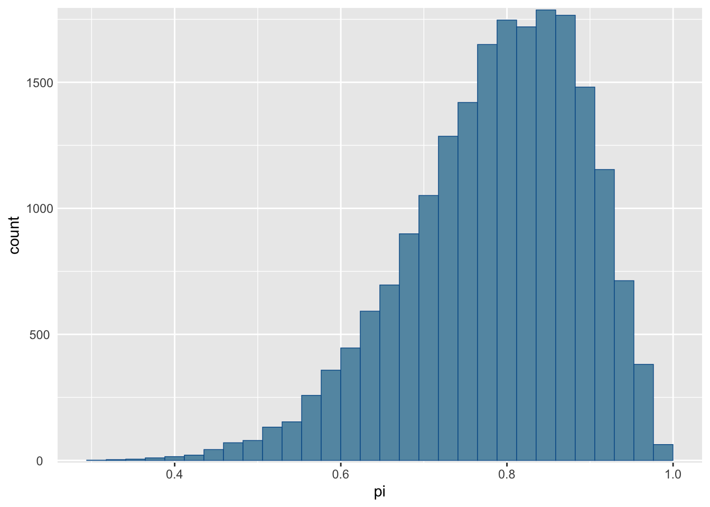
# Histogram of the Markov chain values
mcmc_hist(bb_sim, pars = "pi") +
yaxis_text("TRUE") +
ylab("count")
# Density plot of the Markov chain values
mcmc_dens(bb_sim, pars = "pi") +
yaxis_text(TRUE) +
ylab("density")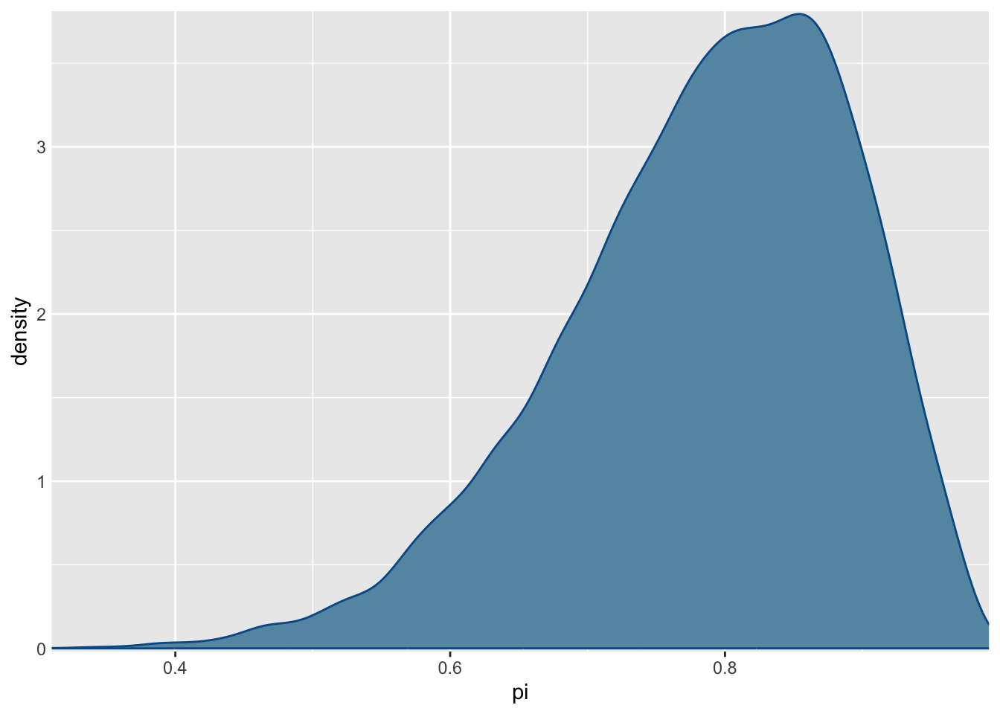
1.2.2 Gamma Poisson Example
# STEP 1: DEFINE the model
gp_model <- "
data {
int<lower = 0> Y[2];
}
parameters {
real<lower = 0> lambda;
}
model {
Y ~ poisson(lambda);
lambda ~ gamma(3, 1);
}
"
# STEP 2: SIMULATE the posterior
gp_sim <- stan(model_code = gp_model, data = list(Y = c(2,8)),
chains = 4, iter = 5000*2, seed = 84735)Running /Library/Frameworks/R.framework/Resources/bin/R CMD SHLIB foo.c
using C compiler: ‘Apple clang version 15.0.0 (clang-1500.1.0.2.5)’
using SDK: ‘MacOSX14.2.sdk’
clang -arch x86_64 -I"/Library/Frameworks/R.framework/Resources/include" -DNDEBUG -I"/Users/ovee/Library/Caches/org.R-project.R/R/renv/cache/v5/R-4.3/x86_64-apple-darwin20/Rcpp/1.0.12/5ea2700d21e038ace58269ecdbeb9ec0/Rcpp/include/" -I"/Users/ovee/Documents/Bayesian/bae-note/renv/library/R-4.3/x86_64-apple-darwin20/RcppEigen/include/" -I"/Users/ovee/Documents/Bayesian/bae-note/renv/library/R-4.3/x86_64-apple-darwin20/RcppEigen/include/unsupported" -I"/Users/ovee/Documents/Bayesian/bae-note/renv/library/R-4.3/x86_64-apple-darwin20/BH/include" -I"/Users/ovee/Library/Caches/org.R-project.R/R/renv/cache/v5/R-4.3/x86_64-apple-darwin20/StanHeaders/2.32.7/3e1bf18c6ab1dc0a4a139bf566f78bbe/StanHeaders/include/src/" -I"/Users/ovee/Library/Caches/org.R-project.R/R/renv/cache/v5/R-4.3/x86_64-apple-darwin20/StanHeaders/2.32.7/3e1bf18c6ab1dc0a4a139bf566f78bbe/StanHeaders/include/" -I"/Users/ovee/Library/Caches/org.R-project.R/R/renv/cache/v5/R-4.3/x86_64-apple-darwin20/RcppParallel/5.1.7/a45594a00f5dbb073d5ec9f48592a08a/RcppParallel/include/" -I"/Users/ovee/Library/Caches/org.R-project.R/R/renv/cache/v5/R-4.3/x86_64-apple-darwin20/rstan/2.32.6/8a5b5978f888a3477c116e0395d006f8/rstan/include" -DEIGEN_NO_DEBUG -DBOOST_DISABLE_ASSERTS -DBOOST_PENDING_INTEGER_LOG2_HPP -DSTAN_THREADS -DUSE_STANC3 -DSTRICT_R_HEADERS -DBOOST_PHOENIX_NO_VARIADIC_EXPRESSION -D_HAS_AUTO_PTR_ETC=0 -include '/Users/ovee/Library/Caches/org.R-project.R/R/renv/cache/v5/R-4.3/x86_64-apple-darwin20/StanHeaders/2.32.7/3e1bf18c6ab1dc0a4a139bf566f78bbe/StanHeaders/include/stan/math/prim/fun/Eigen.hpp' -D_REENTRANT -DRCPP_PARALLEL_USE_TBB=1 -I/opt/R/x86_64/include -fPIC -falign-functions=64 -Wall -g -O2 -c foo.c -o foo.o
In file included from <built-in>:1:
In file included from /Users/ovee/Library/Caches/org.R-project.R/R/renv/cache/v5/R-4.3/x86_64-apple-darwin20/StanHeaders/2.32.7/3e1bf18c6ab1dc0a4a139bf566f78bbe/StanHeaders/include/stan/math/prim/fun/Eigen.hpp:22:
In file included from /Users/ovee/Documents/Bayesian/bae-note/renv/library/R-4.3/x86_64-apple-darwin20/RcppEigen/include/Eigen/Dense:1:
In file included from /Users/ovee/Documents/Bayesian/bae-note/renv/library/R-4.3/x86_64-apple-darwin20/RcppEigen/include/Eigen/Core:19:
/Users/ovee/Documents/Bayesian/bae-note/renv/library/R-4.3/x86_64-apple-darwin20/RcppEigen/include/Eigen/src/Core/util/Macros.h:679:10: fatal error: 'cmath' file not found
#include <cmath>
^~~~~~~
1 error generated.
make: *** [foo.o] Error 1
SAMPLING FOR MODEL 'anon_model' NOW (CHAIN 1).
Chain 1:
Chain 1: Gradient evaluation took 1.2e-05 seconds
Chain 1: 1000 transitions using 10 leapfrog steps per transition would take 0.12 seconds.
Chain 1: Adjust your expectations accordingly!
Chain 1:
Chain 1:
Chain 1: Iteration: 1 / 10000 [ 0%] (Warmup)
Chain 1: Iteration: 1000 / 10000 [ 10%] (Warmup)
Chain 1: Iteration: 2000 / 10000 [ 20%] (Warmup)
Chain 1: Iteration: 3000 / 10000 [ 30%] (Warmup)
Chain 1: Iteration: 4000 / 10000 [ 40%] (Warmup)
Chain 1: Iteration: 5000 / 10000 [ 50%] (Warmup)
Chain 1: Iteration: 5001 / 10000 [ 50%] (Sampling)
Chain 1: Iteration: 6000 / 10000 [ 60%] (Sampling)
Chain 1: Iteration: 7000 / 10000 [ 70%] (Sampling)
Chain 1: Iteration: 8000 / 10000 [ 80%] (Sampling)
Chain 1: Iteration: 9000 / 10000 [ 90%] (Sampling)
Chain 1: Iteration: 10000 / 10000 [100%] (Sampling)
Chain 1:
Chain 1: Elapsed Time: 0.036 seconds (Warm-up)
Chain 1: 0.036 seconds (Sampling)
Chain 1: 0.072 seconds (Total)
Chain 1:
SAMPLING FOR MODEL 'anon_model' NOW (CHAIN 2).
Chain 2:
Chain 2: Gradient evaluation took 1e-06 seconds
Chain 2: 1000 transitions using 10 leapfrog steps per transition would take 0.01 seconds.
Chain 2: Adjust your expectations accordingly!
Chain 2:
Chain 2:
Chain 2: Iteration: 1 / 10000 [ 0%] (Warmup)
Chain 2: Iteration: 1000 / 10000 [ 10%] (Warmup)
Chain 2: Iteration: 2000 / 10000 [ 20%] (Warmup)
Chain 2: Iteration: 3000 / 10000 [ 30%] (Warmup)
Chain 2: Iteration: 4000 / 10000 [ 40%] (Warmup)
Chain 2: Iteration: 5000 / 10000 [ 50%] (Warmup)
Chain 2: Iteration: 5001 / 10000 [ 50%] (Sampling)
Chain 2: Iteration: 6000 / 10000 [ 60%] (Sampling)
Chain 2: Iteration: 7000 / 10000 [ 70%] (Sampling)
Chain 2: Iteration: 8000 / 10000 [ 80%] (Sampling)
Chain 2: Iteration: 9000 / 10000 [ 90%] (Sampling)
Chain 2: Iteration: 10000 / 10000 [100%] (Sampling)
Chain 2:
Chain 2: Elapsed Time: 0.039 seconds (Warm-up)
Chain 2: 0.037 seconds (Sampling)
Chain 2: 0.076 seconds (Total)
Chain 2:
SAMPLING FOR MODEL 'anon_model' NOW (CHAIN 3).
Chain 3:
Chain 3: Gradient evaluation took 2e-06 seconds
Chain 3: 1000 transitions using 10 leapfrog steps per transition would take 0.02 seconds.
Chain 3: Adjust your expectations accordingly!
Chain 3:
Chain 3:
Chain 3: Iteration: 1 / 10000 [ 0%] (Warmup)
Chain 3: Iteration: 1000 / 10000 [ 10%] (Warmup)
Chain 3: Iteration: 2000 / 10000 [ 20%] (Warmup)
Chain 3: Iteration: 3000 / 10000 [ 30%] (Warmup)
Chain 3: Iteration: 4000 / 10000 [ 40%] (Warmup)
Chain 3: Iteration: 5000 / 10000 [ 50%] (Warmup)
Chain 3: Iteration: 5001 / 10000 [ 50%] (Sampling)
Chain 3: Iteration: 6000 / 10000 [ 60%] (Sampling)
Chain 3: Iteration: 7000 / 10000 [ 70%] (Sampling)
Chain 3: Iteration: 8000 / 10000 [ 80%] (Sampling)
Chain 3: Iteration: 9000 / 10000 [ 90%] (Sampling)
Chain 3: Iteration: 10000 / 10000 [100%] (Sampling)
Chain 3:
Chain 3: Elapsed Time: 0.037 seconds (Warm-up)
Chain 3: 0.037 seconds (Sampling)
Chain 3: 0.074 seconds (Total)
Chain 3:
SAMPLING FOR MODEL 'anon_model' NOW (CHAIN 4).
Chain 4:
Chain 4: Gradient evaluation took 1e-06 seconds
Chain 4: 1000 transitions using 10 leapfrog steps per transition would take 0.01 seconds.
Chain 4: Adjust your expectations accordingly!
Chain 4:
Chain 4:
Chain 4: Iteration: 1 / 10000 [ 0%] (Warmup)
Chain 4: Iteration: 1000 / 10000 [ 10%] (Warmup)
Chain 4: Iteration: 2000 / 10000 [ 20%] (Warmup)
Chain 4: Iteration: 3000 / 10000 [ 30%] (Warmup)
Chain 4: Iteration: 4000 / 10000 [ 40%] (Warmup)
Chain 4: Iteration: 5000 / 10000 [ 50%] (Warmup)
Chain 4: Iteration: 5001 / 10000 [ 50%] (Sampling)
Chain 4: Iteration: 6000 / 10000 [ 60%] (Sampling)
Chain 4: Iteration: 7000 / 10000 [ 70%] (Sampling)
Chain 4: Iteration: 8000 / 10000 [ 80%] (Sampling)
Chain 4: Iteration: 9000 / 10000 [ 90%] (Sampling)
Chain 4: Iteration: 10000 / 10000 [100%] (Sampling)
Chain 4:
Chain 4: Elapsed Time: 0.036 seconds (Warm-up)
Chain 4: 0.035 seconds (Sampling)
Chain 4: 0.071 seconds (Total)
Chain 4: # Trace plots of the 4 Markov chains
mcmc_trace(gp_sim, pars = "lambda", size = 0.1)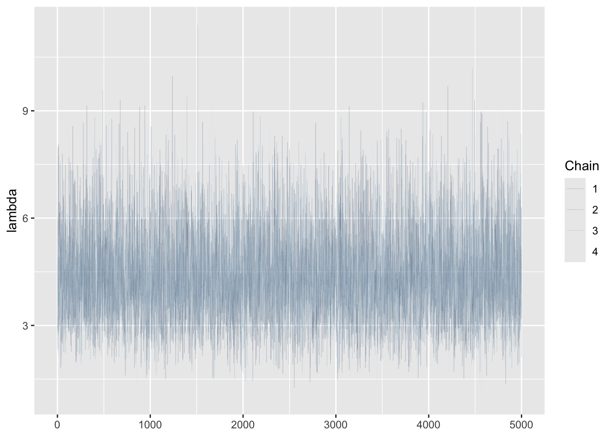
# Histogram of the Markov chain values
mcmc_hist(gp_sim, pars = "lambda") +
yaxis_text(TRUE) +
ylab("count")
# Density plot of the Markov chain values
mcmc_dens(gp_sim, pars = "lambda") +
yaxis_text(TRUE) +
ylab("density")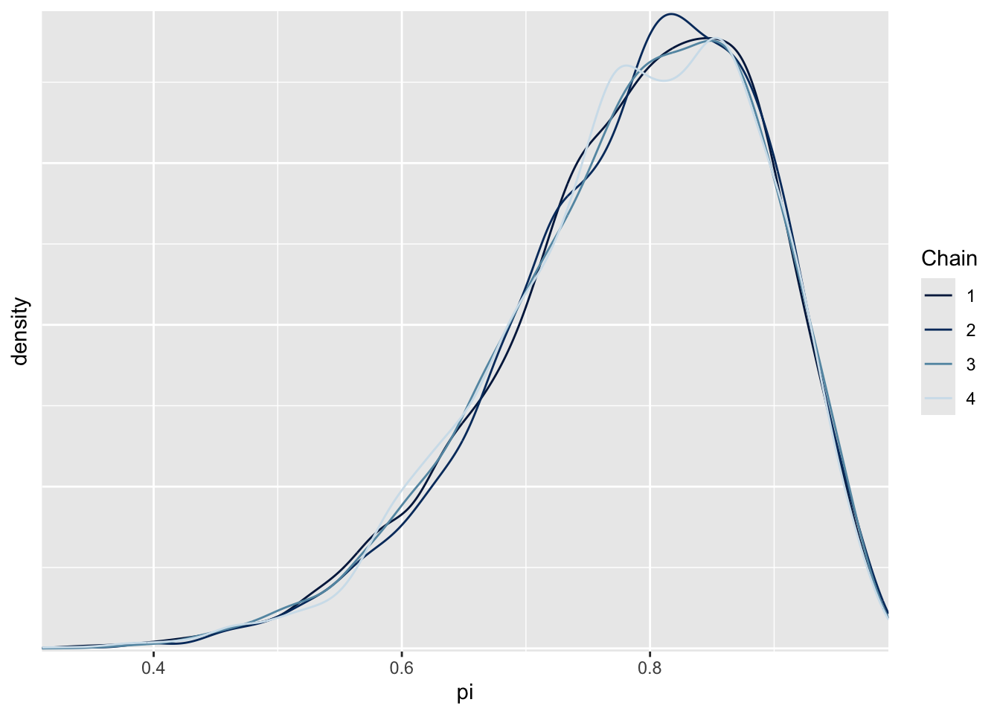
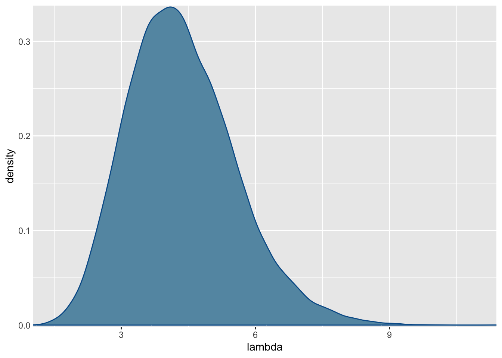
1.2.3 Markov Chain Diagnostics
Some visual and Numerical Diagnostics
- Trace plot
- Parallel Chains
- Effective Sample Size
- Autocorrelation
- R-hat (\(\hat{R}\))
Note
For a stable MCMC sample, there shouldn’t be any pattern in the trace plot, only the random movement.
mcmc_dens_overlay(bb_sim, pars = "pi") +
ylab("density")Here, we observe that these four chains produce nearly indistinguishable posterior approximations. This provides evidence that our simulation is stable.
Effective Sample Size Ratio
The number of independent samples it would take to produce an equivalent accurate posterior estimation.
Typically the effective sample size ratio is less than 1, but if this ratio is less than 0.1, then we might be suspicious of the underlying markov chain.
# Calculate the effective sample size ratio
neff_ratio(bb_sim, pars = c("pi"))[1] 0.3682844
Autocorrelation
Strong autocorrelation or dependence is a bad thing – it goes hand in hand with small effective sample size ratios, and thus provides a warning sign that our resulting posterior approximations might be unreliable.
mcmc_trace(bb_sim, pars = "pi")
mcmc_acf(bb_sim, pars = "pi")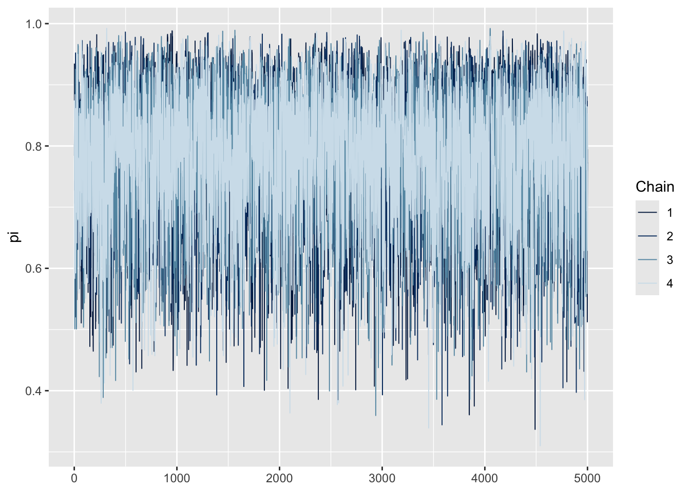
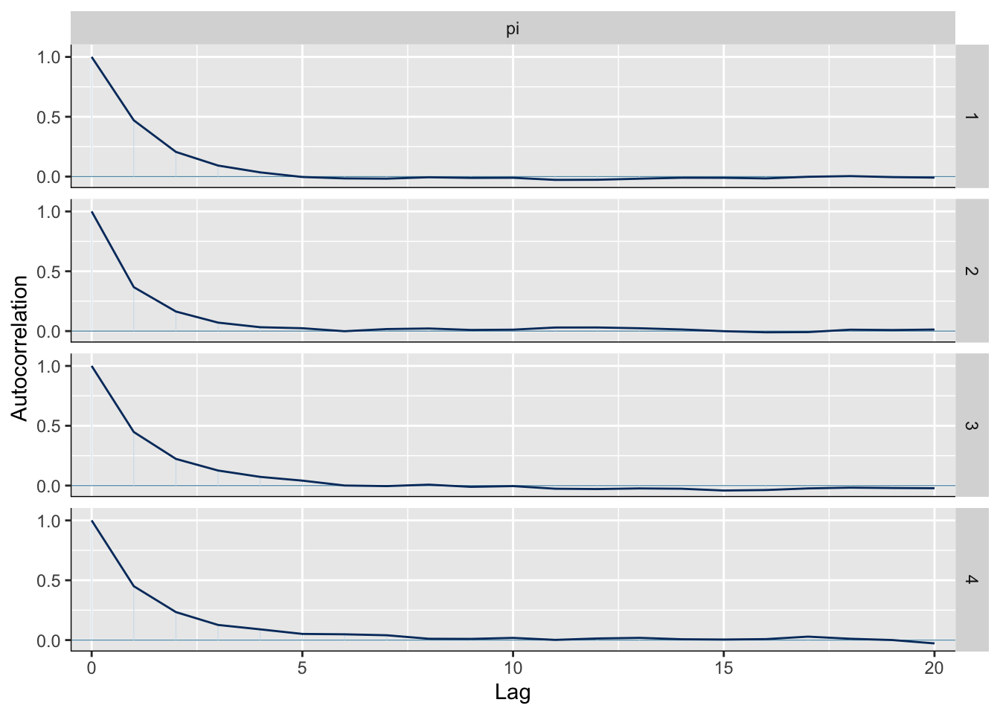
The above bb_sim Markov chain is mixing quickly, i.e., quickly moving around the range of posterior plausible \(\pi\) values, and thus at least mimicking an independent sample.
Fast vs slow mixing Markov chains
Fast mixing chains exhibit behavior similar to that of an independent sample: the chains move “quickly” around the range of posterior plausible values, the autocorrelation among the chain values drops off quickly, and the effective sample size ratio is reasonably large.
Slow mixing chains do not enjoy the features of an independent sample: the chains move “slowly” around the range of posterior plausible values, the autocorrelation among the chain values drops off very slowly, and the effective sample size ratio is small.
So how to tune a slow mixing chain?
- Run a longer chain
- Thinning
R-hat
We want our parallel Markov chains to be consistent to each other. R-hat addresses this consistency by comparing the variability in sampled values across all chains combined to the variability within each individual chain.
Ideally, R-hat \(\approx\) 1, reflecting stability across the parallel chains. In contrast, R-hat \(\gt\) 1 indicates instability, with the variability in the combined chains exceeding that within the chains. Though no golden rule exists, an R-hat ratio greater than 1.05 raises some red flags about the stability of the simulation.
rhat(bb_sim, pars = 'pi')[1] 1.000005